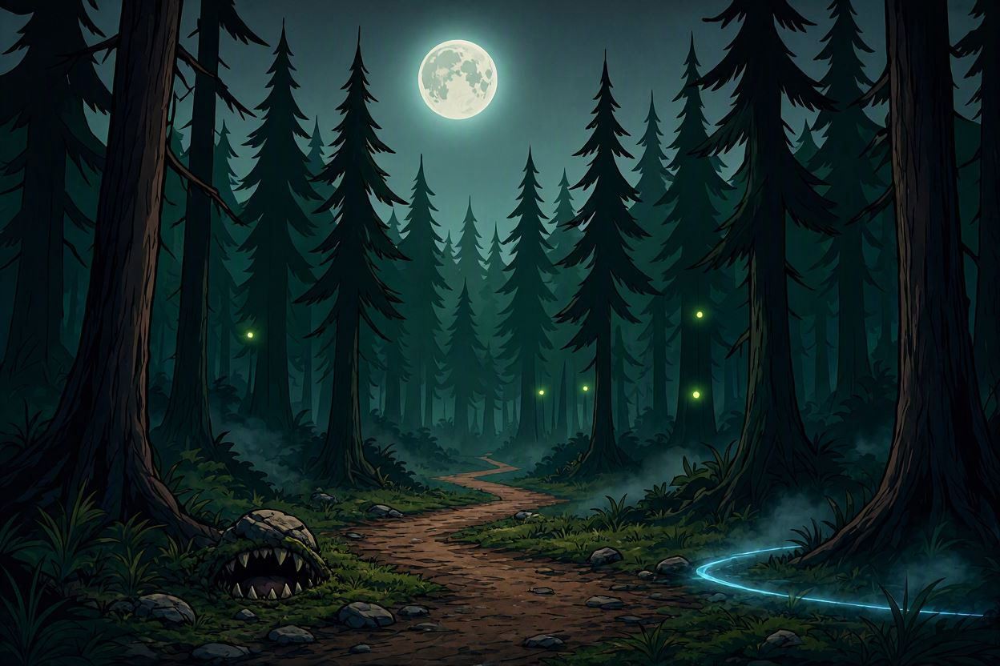

Chapter II - The Whispering Woods

You pursue the dragon's trail through the Whispering Woods — a forest so ancient that even the Superlord's shadow has yet to fully consume it. The trees loom overhead, their branches like skeletal fingers clawing at the moonlit sky.
After hours of tracking, you reach a fork in the path. Three routes lie before you, each more treacherous than the last. The dragon's trail is faint, but you can sense the dark magic that clings to the air — a lingering residue of the Superlord's power.
To the left, a dark cave mouth yawns between the trees, exhaling cold, stale air. Straight ahead, a narrow mountain pass winds upward through jagged rocks. To the right, the sound of rushing water echoes from a river path shrouded in mist.
Your spouse's life hangs in the balance. Choose wisely.
Which path do you take?